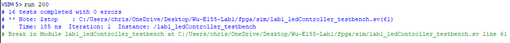
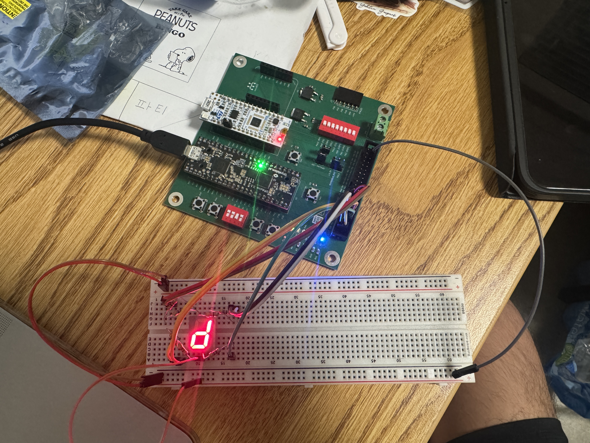

Lab 1: FPGA and MCU Setup and Testing
Introduction
The goal of this lab was to set up our E155 Board, soldering on all the necessary components, testing that the board functions with our FPGA and MCU, and writing code to display all hexadecimal digits on a 7-segment display and program onboard SMD LEDs
Board Preparation
To prepare the development board for use, all the necessary components needed to be soldered on. This includes the 5V and 3.3 V Regulators, the necessary SMT Resistors, Capacitors, and Diodes, and all the necesary THT buttons, switches, and female connector pins. I followed the Interactive Development Board BOM to keep track of all the components that I soldered.
The parts that gave me the most trouble while soldering were the two voltage regulators, as I could not get them to adhere to the solder and stay on the board. I was not able to melt the solder while making contact with the regulator, but after a while of trial and error and guidance from Xavier, I was able to get it to work. Other than that, the rest of the components were straight forward to solder, and the step by step suggestions on the course website aided the process.
Below, is a picture of my fully assembled Development Board
Board Testing
To test whether the board was soldered and assembled correctly, and that the FPGA and MCU are working correctly, I first followed the Lattice Radiant iCE40 UltraPlus Project Setup Tutorial. All of the setup on Radiant went smoothly, however, I had difficulty in programming onto my FPGA. On my personal laptop, the Programmer software would crash everytime I clicked the ‘detect cable button’, and on the lab computers, I would get an FTDI error when uploading code to the FPGA. I was unable to fix this issue for around 3 days, until a new programming method was uploaded (Thank you Kavi!). Thus, I followed the openFPGALoader Programmer Tutorial and was able to successfully program my FPGA. This allowed me to finish the tutorial and successfully see the onboard LED D6 at P42 blinking.
I continued to do further testing on the FPGA as well as the MCU, I downloaded test code from the course Lab 1 Github Repo and programmed onto my board. After running the code on both my FPGA and MCU, I saw that when I had SW7 switched on, LED D3 (PA9/P25), LED D2 (PA10/P23), and LED D7 (P38) were all blinking.
This means that I have successfully tested by development board, FPGA, and MCU, so I know that all my components are working as expected.
FPGA Design
Objective
Now that testing the development board, FPGA, and MCU is complete, we can start working on the lab. The objective of this lab is to take inputs, s[3:0], which are the four DIP switches on SW6, and use them to drive three onboard LEDs, led[2:0], and display the hexadecimal digit of our inputs on a 7-segment display, seg[6:0]. The inputs and outputs are described by the following table:
| Signal Name | Signal Type | Description |
|---|---|---|
s[3:0] |
input | the four DIP switches (on the board, SW6) |
led[2:0] |
output | 3 LEDs (you may use the on-board LEDs) |
seg[6:0] |
output | the segments of a common-anode 7-segment display |
The output of led[2] will be programmed to blink at 2.4 Hz, while the outputs of led[1:0] can be described by the following table:
s1 |
s0 |
led[0] |
|---|---|---|
| 0 | 0 | OFF |
| 0 | 1 | ON |
| 1 | 0 | ON |
| 1 | 1 | OFF |
s3 |
s2 |
led[1] |
|---|---|---|
| 0 | 0 | OFF |
| 0 | 1 | OFF |
| 1 | 0 | OFF |
| 1 | 1 | ON |
Design
Block Diagram
My approach to this lab consists on three different modules. An overarching top level module called lab1_cw, which will be programmed to the board, and two submodules lab1_ledController, and lab1_sevenSegmentDisplay. The lab1_ledController submodule will control the output of each LED, utilizing the HSOSC library to control led[2], and utilizing simple logic to control led[1:0]. The lab1_sevenSegmentDisplay submodule will control the outputs on the 7-segment display, displaying the hexadecimal value provided by the dip switches, s[3:0]. The lab1_cw module will call both the lab1_ledController submodule and the lab1_sevenSegmentDisplay submodule to run on the board. Below is the block diagram I used to create this project:
LED Design
Design for the lab1_ledController submodule was split into two components, designing the logic for led[1:0] based on inputs s[3:0], and making led[2] blink at 2.4 Hz.
Designing the logic for led[1:0] was fairly simple, based on the patterns formed from the table above. Inputs s1 and s0 control the output of led[0]. From the table, led[0] is formed by an XOR gate with inputs s1 and s0.
Inputs s3 and s2 control the output of led[1]. From the table, led[1] is formed by an AND gate, with inputs s3 and s2.
Designing led[2] to blink at 2.4 Hz was a bit more challenging. To run at 2.4 Hz, every full cycle of the LED should be around 0.4167 seconds per cycle. Given that the LED is on or off for only half a cycle, which is also known as a 50% duty cycle, the LED needs to change state every half cycle, or every 0.2083 seconds. The HSOSC oscillator runs at 48 MHz. So in order for us to change states at every 0.2083 seconds, the clock will need to tick 10,000,000 times. This is done using a counter, which at every 10 million clock ticks of the HSOSC oscillator, will change the state of the LED from on to off or vice versa.
Below is the code block that was used for this submodule:
// lab1_ledController.sv
// Christian Wu
// chrwu@g.hmc.edu
// 08/31/25
// This module takes in a 4-bit input 's', using the dip switches on the motherboard,
// and controls a 3-bit LED output led[2:0], which are the SMD LEDs on the motherboard.
module lab1_ledController (
input logic [3:0] s,
output logic [2:0] led
);
// LED Logic for led[0] and led[1]
xor led0_logic(led[0], s[0], s[1]);
and led1_logic(led[1], s[2], s[3]);
// LED Logic for led[2] to blink at 2.4 Hz
logic int_osc;
logic led_state = 0;
logic [24:0] counter = 0;
// Internal high-speed oscillator
HSOSC hf_osc (.CLKHFPU(1'b1), .CLKHFEN(1'b1), .CLKHF(int_osc));
// Simple clock divider
always_ff @(posedge int_osc)
begin
counter <= counter + 1;
if (counter == 10_000_000) begin // Adjust this value for 2.4 Hz
led_state <= ~led_state;
counter <= 0;
end
end
//assign led[2] to blink state
assign led[2] = led_state;
endmoduleSeven Segment Display Design
Designing the lab1_sevenSegmentDisplay submodule was fairly simple. It involved using a case statement to write out the outputs, seg[6:0] of the 7-segment display for all 16 possible inputs of s[3:0]. While writing the code, it is worth noting that turning on each segment of the 7-segment display was with a 0 output as the cathode is connected to each output pin.
Below is a labeled image of each segment of the 7-segment display and the code for this submodule, where s[0] is segment A and s[6] is segment G of the 7-segment display:

// lab1_sevenSegmentDisplay.sv
// Christian Wu
// chrwu@g.hmc.edu
// 08/31/25
// This module takes in a 4-bit input 's', using the dip switches on the motherboard,
// and controls the seven-segment display output seg[6:0].
module lab1_sevenSegmentDisplay (
input logic [3:0] s,
output logic [6:0] seg);
// 7-Segment Display Logic
always_comb begin
case (s)
4'h0: seg = 7'b1000000; // 0
4'h1: seg = 7'b1111001; // 1
4'h2: seg = 7'b0100100; // 2
4'h3: seg = 7'b0110000; // 3
4'h4: seg = 7'b0011001; // 4
4'h5: seg = 7'b0010010; // 5
4'h6: seg = 7'b0000010; // 6
4'h7: seg = 7'b1111000; // 7
4'h8: seg = 7'b0000000; // 8
4'h9: seg = 7'b0010000; // 9
4'hA: seg = 7'b0001000; // A
4'hB: seg = 7'b0000011; // b
4'hC: seg = 7'b1000110; // C
4'hD: seg = 7'b0100001; // d
4'hE: seg = 7'b0000110; // E
4'hF: seg = 7'b0001110; // F
default: seg = 7'b1111111; // Off
endcase
end
endmoduleTop Level Module
Given that this lab project was split into one top level module and two submodules, the top level module is quite simple. It is a module that calls upon the two submodules, lab1_ledController and lab1_sevenSegmentDisplay. This top level module, lab1_cw, will then be programmed onto the FPGA.
Below is the code for the top level module, lab1_cw:
// lab1_cw.sv
// Christian Wu
// chrwu@g.hmc.edu
// 08/31/25
// This module takes in a 4-bit input 's', using the dip switches on the motherboard,
// and controls a 3-bit LED output led[2:0], which are the SMD LEDs on the motherboard,
// and a 7-segment display output seg[6:0].
module lab1_cw (
input logic [3:0] s,
output logic [2:0] led,
output logic [6:0] seg
);
// call led controller module
lab1_ledController led_ctrl (.s(s), .led(led));
// call seven segment display module
lab1_sevenSegmentDisplay seg_ctrl (.s(s), .seg(seg));
endmoduleTestbench Simulation and Testing
Testbench and Test Vector Design
To test my code and see whether it would work as expected, I created a testbench to test before moving on to using physical hardware. I created a testbench of each of my three modules. For the top level module, lab1_cw, I tested that the LED and 7-segment display outputs would be correct based on the dip switch input. For the lab1_ledController submodule, I tested just the LED outputs with the dip switch input. For the lab1_sevenSegmentDisplay submodule, I tested just the 7-segment display output with the dip switch input. For both the lab1_cw module and the lab1_ledController submodule, I omitted led[2] from the testbench and test vectors as it is blinking at 2.4 Hz.
To know what we are testing against, there are test vectors associated with each testbench, showing the expected outputs that will be compared against the actual outputs given by the code. To avoid redundancy, I am only attaching the top level lab1_cw test vectors testbench, as it covers what is included in the testbenches of both submodules. The testbenches for my other modules can be found in my Lab 1 GitHub Repo
Below are the test vectors I used for the lab1_cw_testbench:
// lab1_cw_testvectors.tv
// Christian Wu
// chrwu@g.hmc.edu
// 08/31/25
// Test vectors to use in my testbench file, lab1_cw_testbench.sv,
// to simulate LED and 7 segment display
// Test vector format:
// s[3:0]_LED[1:0]_seg[6:0]
// led[2] is excluded because it blinks at 2.4 Hz, so it will be tested on an oscilloscope
0000_00_1000000
0001_01_1111001
0010_01_0100100
0011_00_0110000
0100_00_0011001
0101_01_0010010
0110_01_0000010
0111_00_1111000
1000_00_0000000
1001_01_0010000
1010_01_0001000
1011_00_0000011
1100_10_1000110
1101_11_0100001
1110_11_0000110
1111_10_0001110Below is the code for the testbench used for lab1_cw:
// lab1_cw_testbench.sv
// Christian Wu
// chrwu@g.hmc.edu
// 08/31/25
// This is a testbench to test my lab 1 code (lab1_cw.sv).
// It tests the LED logic and 7-segment display logic based on different 4-bit inputs.
`timescale 1ns/1ns
`default_nettype none
`define N_TV 16
module lab1_cw_testbench();
logic clk;
logic reset;
logic [3:0] s;
logic [2:0] led;
logic [1:0] led_expected;
logic [6:0] seg, seg_expected;
logic [31:0] vectornum, errors;
logic [12:0] testvectors[10000:0]; // s[3:0]_led[1:0]_seg[6:0]
// Instantiate the device under test (DUT)
lab1_cw dut (.s(s), .led(led), .seg(seg));
// generate clock
always begin
clk = 1; #5; clk = 0; #5;
end
// Load test vectors, and pulse reset
initial begin
$readmemb("lab1_cw_testvectors.tv", testvectors, 0, `N_TV-1);
vectornum = 0; errors = 0;
reset = 1; #27; reset = 0;
end
// Apply test vectors at rising edge of clock
always @(posedge clk) begin
#1; {s, led_expected, seg_expected} = testvectors[vectornum];
end
initial
begin
// Create dumpfile for signals
$dumpfile("lab1_cw_testbench.vcd");
$dumpvars(0, lab1_cw_testbench);
end
// Check results on falling edge of clock
always @(negedge clk) begin
if (~reset) begin
if (led[1:0] != led_expected || seg != seg_expected) begin
$display("Error at vector %0d: s=%b, led=%b (expected %b), seg=%b (expected %b)",
vectornum, s, led[1:0], led_expected, seg, seg_expected);
errors = errors + 1;
end
vectornum = vectornum + 1;
if (vectornum >= `N_TV) begin
$display("%0d tests completed with %0d errors", vectornum, errors);
$stop;
end
end
end
endmoduleSomething that I had trouble with on this testbench was getting it to output the message that says the tests completed with 0 errors. When I used if (testvectors[vectornum] === 13'bx) to stop the simulation and display the message, no message would display. Thus, I checked whether vectornum reached the number of test vectors I had and would stop the simulation. This method worked, however, I want to figure out why the other method would not work.
Testbench Results
I was able to simulate each of my modules in Questa and it successfully worked, meaning that the outputs of my modules matched the expected output depicted by my test vectors. Below are the waveforms for each of my module’s testbenches.
lab1_ledController_testbench results (only testing led[1] and led[0]):
lab1_ledController Waveforms
lab1_ledController TranscriptIn addition to the testbench for the LEDs, I also used an oscilloscope to confirm that led[2] is blinking at 2.4 Hz. The oscilloscope trace can be seen below:
led[2] blinking at 2.4 Hzlab1_sevenSegmentDisplay_testbench results:
lab1_sevenSegmentDisplay Waveformslab1_sevenSegmentDisplay Transcriptlab1_cw_testbench results (top level module including LED and 7-segment display output):

lab1_cw Waveformslab1_cw TranscriptThus, all testbenches and testing for this lab was successful!
Hardware
Design and Schematic
After finishing with testing, I can now build my hardware and program my FPGA. Below, is a table of all of my pin assignments, as well as my schematic:
| Name | Pin |
|---|---|
| s[0] | 37 |
| s[1] | 31 |
| s[2] | 35 |
| s[3] | 32 |
| led[0] | 28 |
| led[1] | 38 |
| led[2] | 42 |
| seg[0] | 10 |
| seg[1] | 20 |
| seg[2] | 13 |
| seg[3] | 9 |
| seg[4] | 6 |
| seg[5] | 45 |
| seg[6] | 47 |
For the 7-segment display, resistors were added at each of the seven segment pins to prevent the display from drawing too much current. After referencing the HDSP-511A Seven Segment Display Datasheet, I found that the forward voltage for the display is 2 V. Given that we are using a 3.3 V source voltage from the FPGA, the voltage across the resistor is 1.3 V. It is safe for the 7-segment display’s pins to be around 10-20 mA, so to keep it clean, I used 100 Ohm Resistors, giving a current of 13 mA.
Results
After finishing with the design, I was able to wire my board according to the schematic and programming my top level module, lab1_cw, onto my board. Since the lab ran out of ribbon cables, I used female to male jumper cables to connect my FPGA from the development board to my breadboard. I was able to physically verify that everything worked as expected. I used the oscilloscope to confirm that led[2] was blinking at 2.4 Hz, and the 7-segment display was able to display all 16 hexadecimal inputs. led[1:0] were also able to light up as expected based on the inputs s[3:0].
Below are pictures demonstrating all 16 hexadecimal values on my 7-segment display:


Below is a picture demonstrating led[1] being on when s[3] and s[2] is on, and led[0] being on with only s[1] being on.
led[1] and led[0] on based on s[3:0] inputsAs a result, my design and project has met all the requirements for this lab.
AI Prototype
Prompt
To test how AI would do for this lab, I entered the following prompt to Claude AI:
Write SystemVerilog HDL to leverage the internal high speed oscillator in the Lattice UP5K FPGA and blink an LED at 2 Hz. Take full advantage of SystemVerilog syntax, for example, using logic instead of wire and reg.AI Code
As a result, it returned the following code:
// SystemVerilog LED Blinker for Lattice UP5K FPGA
// Uses internal 48MHz oscillator to blink LED at 2Hz
// Takes advantage of SystemVerilog features like logic, always_ff, etc.
module led_blinker_up5k (
output logic led
);
// Internal oscillator clock signal
logic clk_48mhz;
// Counter for frequency division
// Need to divide 48MHz by 12M to get 4Hz toggle (2Hz blink)
// 12M = 12_000_000 requires 24 bits (2^24 = 16,777,216)
localparam int COUNTER_MAX = 12_000_000 - 1;
logic [23:0] counter;
// LED output register
logic led_reg;
// Instantiate the internal high-frequency oscillator
// SB_HFOSC is the Lattice UP5K primitive for the internal oscillator
SB_HFOSC #(
.CLKHF_DIV("0b00") // 48MHz (divide by 1)
) hfosc_inst (
.CLKHFPU(1'b1), // Power up the oscillator
.CLKHFEN(1'b1), // Enable the oscillator
.CLKHF(clk_48mhz) // 48MHz clock output
);
// Counter logic using SystemVerilog always_ff
always_ff @(posedge clk_48mhz) begin
if (counter >= COUNTER_MAX) begin
counter <= '0;
led_reg <= ~led_reg; // Toggle LED every 0.25 seconds
end else begin
counter <= counter + 1'b1;
end
end
// Assign LED output
assign led = led_reg;
endmoduleTest in Radiant
I then started a new project in Radiant and attempted to synthesize the code. It was unable to synthesize due to the following error:
ERROR <35901063> - c:/users/chris/onedrive/desktop/wu-e155-lab1/lab1_cw_aiprototype/source/impl_1/led_blinker_up5k.sv(29): instantiating unknown module SB_HFOSC. VERI-1063
child process exited abnormally
Done: error code 1Claude AI proceded to make some changes but after synthesizing, it still returned the same error.
Reflection
After comparing my code to the one that Claude produced, I was able to see the potential of coding with AI. Claude got everything in the module correct with the exception of the HSOSC part. Although this is the most important part and Claude got it wrong, it was very close to being right, and small tweaks and guidance in the right direction on to properly use the HSOSC library would result in code that would work.
I like how clean the syntax of Claude is, and the variable names are informative. The added comments are also quite helpful to understand the logic and structure of the code. With some support on the library, coding with an AI can be very powerful, as it is able to do the bulk of the work for us quickly and efficiently. Small tweaks for more nuanced things like specific libraries is a reasonable fix for me and an easy one to do, to be able to take advantage of the power of AI for the rest of the code. To do this, I could either change the code manually, or create more specific prompts to tell it how to use the library in a way that will work.
Overall, I am very impressed with how well it worked, and I see a lot of potential for it to be used for the final project.
Hours Spent
I spent 24 hours on this lab.